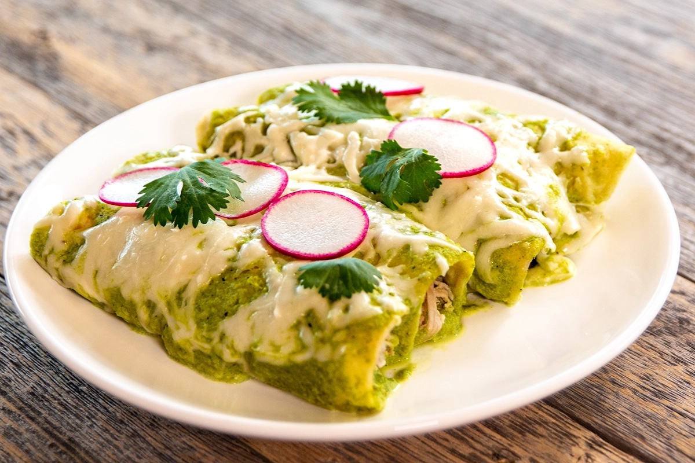

Enchiladas Suizas

Description
Enchiladas Suizas, or Swiss Enchiladas, are called Swiss due to the dairy used (cream cheese, sour cream, Oaxaca cheese). Traditionally, they are one of the only types of enchiladas you’ll find in Mexico that are baked, rather than assembled and immediately served.
Ingredients
-
2 lb Chicken Thighs
-
1/2 Large Yellow Onion
-
6 cups Chicken Stock
-
1 tsp. Kosher Salt
-
4 Poblano Peppers
-
3 Jalapeño Peppers
-
3 Cloves Garlic
-
6 oz. Tomatillos
-
1/2 cup Sour Cream
-
1/2 cup Cream Cheese
-
8 oz. Oaxaca Cheese
-
12 Corn Tortillas
-
2 Medium Radishes
-
2 tbsp. Cilantro
Steps
-
Roast the poblanos and jalapenos. Peel the poblanos, then seed and stem them and the jalapnos (see above for detailed directions).
-
Add 2 pounds of chicken, 1/2 of a yellow onion, 3 cloves of garlic, 1 tsp. of kosher salt, and 6 cups of chicken stock to a pot. If the chicken isn't covered by the stock, add enough water to make up the difference. Bring to a boil. Reduce to a simmer and cook for 40 minutes. Add the tomatillos an cook an additional 20 minutes.
-
Preheat your oven to 375 degrees with the rack in the center position.
-
Remove the tomatillos and garlic from the pot with a slotted spoon. Squeeze the garlic cloves out of their skins, then place them and the tomatillos in a blender jar. Add all of the roasted peppers, the sour cream, the cream cheese, and 1 tsp. of kosher salt. Blend until smooth.
-
Test to see if the chicken is tender enough to shred. If not, continue cooking until tender. If so shred with two forks or shred in a stand mixer with the paddle attachment attached. Remove the onion with a slotted spoon, and chop finely with a knife. Mix into the shredded chicken.
-
Add three tablespoons of oil into a frying pan and heat on medium-high. Fry the tortillas on each side until starting to brown, but not crispy. Drain on a paper-towel-lined plate.
-
Once the tortillas are cool enough to handle, add 1/4 to 1/3 cup of the shredded chicken to a tortilla, roll, and place seam side down in your baking pan. once the pan is full, pour the sauce over the top. Top with the shredded Oaxaca cheese. Bake for ten minutes, until the cheese is completely melted.
NOTE: if you end up with extra shredded chicken, just sprinkle it over the top of the enchiladas before adding the sauce.
-
Remove from the oven and top with the sliced radishes and chopped cilantro. Serve immediately.